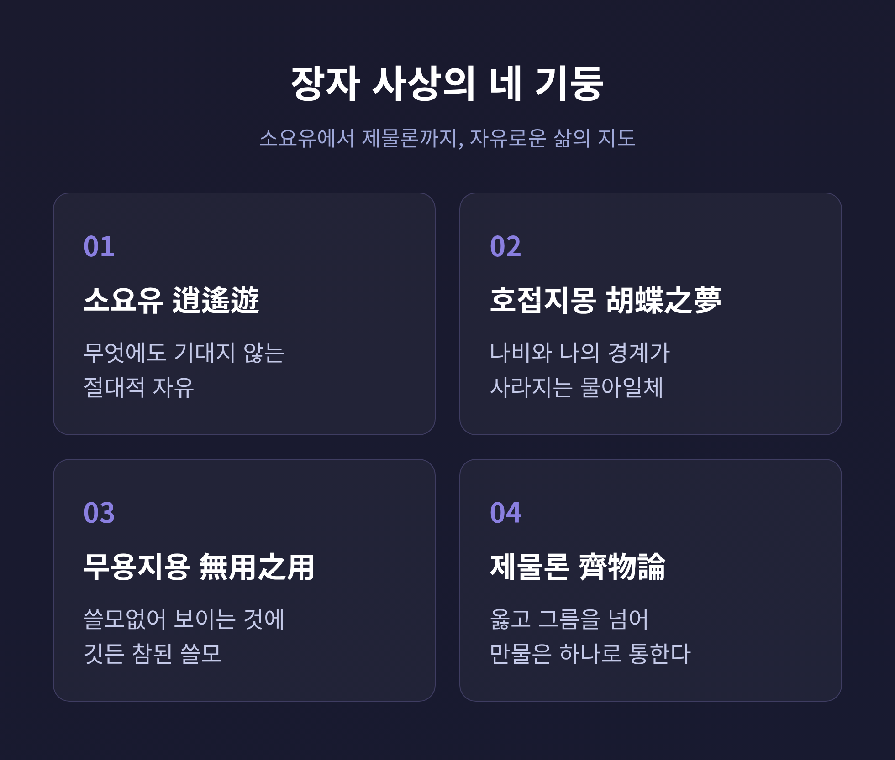
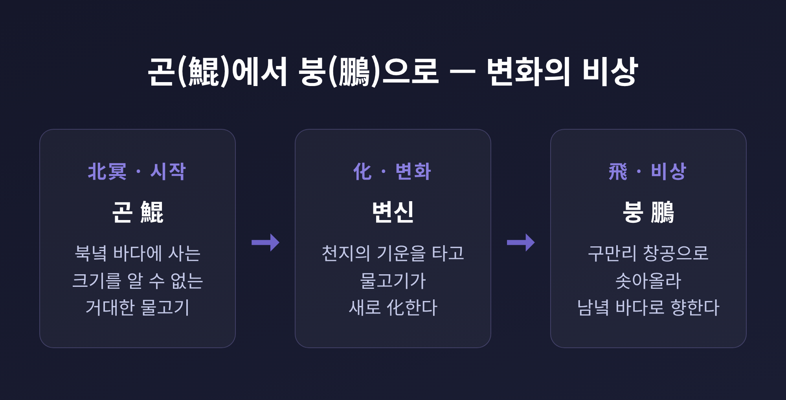
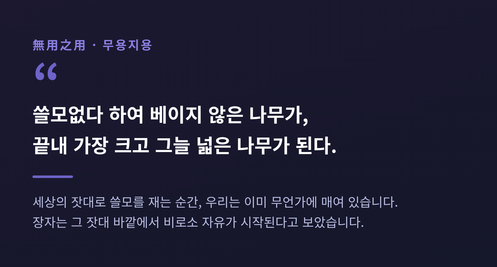

[철학/인문] 장자 소요유, 쓸모없음의 쓸모와 나비의 꿈으로 보는 자유
오늘은 장자의 소요유를 중심으로 그의 철학을 정리해 보려 합니다. 핵심만 먼저 말씀드리면, 장자는 세상의 속박을 벗고 무엇에도 의존하지 않는 정신적 자유를 이야기합니다. 소요유, 호접지몽, 무용지용, 제물론. 이 네 개념을 차례로 따라가 보겠습니다.

장자는 어떤 사람이었나
장자(莊子)는 중국 전국시대 도가의 대표 사상가입니다. 본명은 주(周), 그래서 장주(莊周)라 부릅니다. 출신은 송나라 몽 지역으로 전합니다.
생몰년은 정확하지 않습니다. 통상 기원전 369년경에서 286년경으로 추정할 뿐, 자료마다 차이가 있습니다.
그는 노자의 사상을 이어받아, 노자와 함께 노장사상의 두 축을 이뤘습니다.
사마천의 《사기》에 따르면 장자는 한때 고향에서 옻나무 밭의 하급 관리를 지냈다고 합니다. 생활은 매우 가난했다고 전합니다. 권력과 부귀를 멀리하고 정신의 자유를 좇은 태도가, 그가 남긴 여러 일화에 그대로 배어 있습니다.
그가 살던 전국시대는 제후국들이 패권을 다투던 전란의 시기였습니다. 동시에 제자백가가 쏟아져 나온 사상의 황금기이기도 했습니다. 유가가 인의예지로 사회 질서를 회복하려 했다면, 도가는 인위를 버리고 자연을 따르는 길을 제시했습니다. 장자는 그 흐름 위에서 개인의 정신적 자유와 초월에 마음을 두었습니다.
《장자》라는 책은 약 6만 5천여 자, 33편으로 이뤄져 있습니다. 그중 내편 7편이 장자 본인의 사상에 가장 가깝다고 평가받습니다. 「소요유」와 「제물론」이 모두 이 내편에 속합니다.
소요유 — 무엇에도 매이지 않는 자유
「소요유(逍遙遊)」는 《장자》의 첫 편입니다. 책 전체의 문을 여는 글입니다.
글자 그대로는 "한가로이 거닐며 노닐다"라는 뜻입니다. 아무 속박 없이 노니는 경지를 가리킵니다. 단순한 여행이 아니라, 정신의 자유로 삶의 모든 얽매임에서 초연해지는 상태를 말합니다.
이 편은 거대한 우화로 시작합니다. "북녘 바다에 물고기가 있으니 그 이름이 곤이다." 원문으로는 북명유어 기명위곤(北冥有魚 其名爲鯤)입니다.
곤(鯤)은 본래 작은 물고기나 물고기 알을 뜻하는 글자입니다. 그런데 우화 속에서는 크기가 몇천 리에 달하는 거대한 물고기로 등장합니다. 이 곤이 변하여 전설의 새 붕(鵬)이 되고, 붕은 날개를 펴 구만리 창공으로 솟구쳐 남녘 바다로 날아갑니다.
작은 것이 큰 것으로 거듭나는 장면입니다.
붕은 엄청난 변화의 가능성을 실현한 존재입니다. 바닷속에 갇혀 살던 물고기가 그 속박을 벗고 하늘로 솟아오르듯, 사람도 현실의 속박을 벗고 자유로운 존재로 거듭날 수 있다는 비유입니다.

이어서 작은 새가 등장합니다. 매미와 메추라기는 구만리를 나는 붕을 비웃습니다. "저렇게까지 높이 날 필요가 뭐 있나." 장자는 여기서 작은 앎과 큰 앎의 차이를 드러냅니다. 자기 세계에 갇힌 존재는 더 큰 경지를 끝내 이해하지 못합니다.
그렇다면 바람을 타고 나는 사람은 자유로울까요. 장자는 바람을 타고 나는 열자조차 "바람에 의지하므로" 아직 완전한 자유는 아니라고 봅니다. 진정한 소요유는 무엇에도 기대지 않는 경지입니다. 그는 이렇게 적습니다. 지인무기 신인무공 성인무명(至人無己 神人無功 聖人無名). 지극한 사람은 자아가 없고, 신인은 공적에 매이지 않으며, 성인은 명성에 매이지 않는다는 뜻입니다.
호접지몽 — 나비의 꿈, 나와 사물의 경계
호접지몽(胡蝶之夢)은 「제물론」의 맨 끝에 놓인 우화입니다. 글자 뜻은 "나비의 꿈"입니다.
이야기는 짧습니다. 어느 날 장주가 꿈에 나비가 됩니다. 훨훨 날며 스스로 나비임을 즐길 뿐, 자기가 장주라는 사실은 알지 못합니다. 문득 깨어 보니 분명 장주였습니다. 그러자 그는 묻습니다. "장주가 꿈에 나비가 된 것인가, 아니면 나비가 꿈에 장주가 된 것인가."
이 물음의 핵심은 물아일체입니다. 사물과 내가 하나가 되는 경지입니다. 주체와 객체의 경계가 사라지고, 자아와 집착이 초월되어 자연과 하나로 융화되는 상태를 가리킵니다.
장주와 나비 사이에는 분명 구별이 있습니다. 다만 그 구별이 끊임없이 바뀌며 흐릅니다. 장자는 이 끝없는 변화를 물화(物化)라 불렀습니다.
한 가지 짚어둘 점이 있습니다. 이 우화를 단순한 인생무상으로 읽어서는 안 된다는 견해가 있습니다. 호접지몽은 허무가 아니라, 만물이 하나로 통하는 자유로운 정신 상태를 형상화한 것으로 보는 해석이 유력합니다.
무용지용 — 쓸모없음의 쓸모
장자의 가장 역설적인 통찰은 여기에 있습니다. "사람들은 모두 쓸모 있는 것의 쓸모만 알 뿐, 쓸모없는 것의 쓸모는 알지 못한다." 원문으로는 인개지유용지용 이막지무용지용야(人皆知有用之用 而莫知無用之用也)이며, 「인간세」 편의 마무리에 나옵니다.
세 우화가 이 명제를 받칩니다.
「인간세」의 큰 상수리나무가 첫 번째입니다. 목수가 길을 가다 사당 옆의 거대한 나무를 봅니다. 둘레가 엄청나지만 거들떠보지도 않습니다. 배를 만들면 가라앉고, 관을 짜면 썩고, 그릇을 만들면 깨지는 쓸모없는 나무이기 때문입니다. 그러나 바로 그 쓸모없음 덕분에, 이 나무는 도끼에 잘리지 않고 천수를 누립니다.
같은 편의 지리소가 두 번째입니다. 지리소는 몸이 심하게 굽고 기형인 인물입니다. 그런데 그 쓸모없어 보이는 몸 덕분에 징집과 부역에서 면제되고, 나라가 곡식을 나눌 때는 받아 천수를 누립니다.
세 번째는 「소요유」 끝의 논쟁입니다. 장자와 혜시가 큰 박과 가죽나무를 두고 두 차례 맞섭니다. 혜시가 말합니다. "내게 큰 나무가 있는데 사람들이 가죽나무라 부른다. 줄기는 울퉁불퉁하고 가지는 굽어 목수가 거들떠보지 않는다." 자네 말도 그처럼 크기만 하고 쓸모없다는 비꼼입니다.
장자가 답합니다. 그렇다면 그 나무를 "아무것도 없는 드넓은 들판(無何有之鄕)"에 심어두고, 그 곁에서 하릴없이 거닐며 그 아래 누워 쉬면 되지 않느냐고. 도끼에 잘릴 일도, 해를 입을 일도 없으니, 쓸모없음이야말로 근심 없이 노닐 수 있는 바탕이라는 것입니다.

혜시는 사물에 정해진 용도가 있다고 전제합니다. 장자는 그 고정된 쓸모라는 전제 자체를 허뭅니다. 쓸모는 시선에 따라 달라진다는 것입니다.
제물론 — 시비를 넘어선 자리
「제물론」은 《장자》에서 이론의 골격을 제공하는 가장 중요한 편으로 꼽힙니다. 핵심 물음은 하나입니다. 만물을 차별 없이 동등하게 바라보는 경지에 어떻게 이를 것인가.
장자는 모든 판단이 상대적이라고 봅니다. '이것(是)'은 동시에 '저것(彼)'이며, 입장에 따라 옳고 그름이 따로 있을 뿐입니다. 시비에는 절대 기준이 없습니다.
그래서 그는 시비 다툼을 이어가기보다, 그 구분 자체를 넘어서는 길을 제시합니다. 대립이 사라지는 중심을 도추(道樞), 곧 도의 지도리라 불렀습니다. 이 지도리가 고리의 중심을 얻으면 무한한 변화에 끝없이 응할 수 있습니다. 비운 마음, 곧 허심에 대한 은유입니다.
앞서 본 나비의 꿈이 바로 이 제물론의 결론부에 놓여 있습니다. 만물이 하나로 통하는 경지를 형상화한 장치인 셈입니다.
노자와의 차이, 그리고 오늘의 의미
장자는 노자의 도 개념을 이어받았습니다. 다만 강조점이 다릅니다.
노자는 겸허와 부쟁, 상선약수처럼 정치와 처세의 차원에 무게를 두었습니다. 장자는 그 도 개념을 개인의 정신적 자유 쪽으로 밀고 나갑니다. 제물과 물아일체, 소요유처럼 내면의 초월과 절대 자유에 집중합니다.
문체도 다릅니다. 노자의 《도덕경》이 짧고 함축적인 잠언이라면, 장자는 풍부한 우화와 비유, 역설로 사상을 펼칩니다. 문학성이 매우 높습니다.
이 철학이 오늘 우리에게 닿는 지점은 분명합니다.
장자는 근심을 내려놓고 자연의 법칙을 따르며 세상 밖에서 초연히 노니는 삶을 그렸습니다. 끝없는 성취와 비교, 경쟁을 당연시하는 가치관에 대한 강력한 반문입니다. 인위적 욕망으로 자신을 끊임없이 소진하지 않는 무위의 태도는, 성과 강박과 번아웃에 시달리는 이들에게 쉼의 근거가 됩니다.
무용지용은 생산성과 효율로만 가치를 재는 시선을 뒤집습니다. 쓸모없어 보이는 시간과 여백이야말로 삶을 지켜주는 자원일 수 있다는 메시지입니다.
물론 한계도 있습니다. 장자의 길은 사회 질서나 현실 개혁의 구체적 처방을 제시하지 않습니다. 세상 밖으로 초연히 물러나는 태도가, 마땅히 져야 할 책임마저 외면하는 핑계로 읽힐 위험도 있습니다. 그래서 이 철학은 정답이라기보다, 한쪽으로 기운 삶을 되비추는 거울에 가깝습니다.
끝으로 한 마디만 더 드리겠습니다. 장자가 던진 물음은 결국 하나로 모입니다.
"쓸모없어 보이는 자리에야말로 가장 자유로운 삶이 있다."
오늘 하루, 아무 쓸모 없이 흘려보낸 시간이 있으셨다면, 그것이 헛된 것이었는지 다시 한 번 물어보셔도 좋겠습니다.